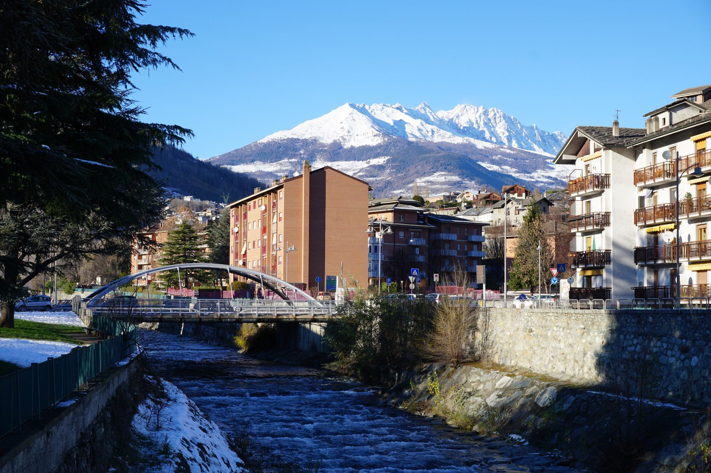
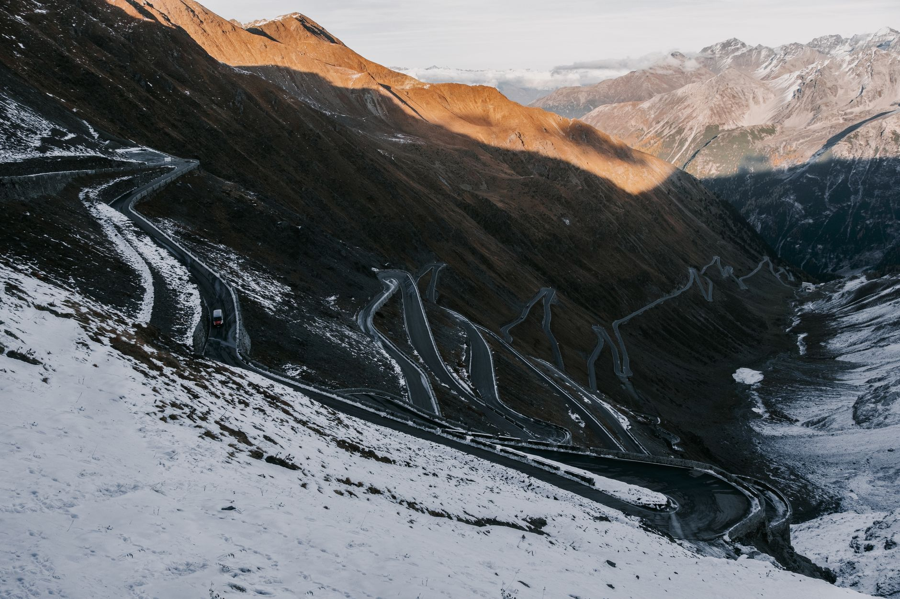
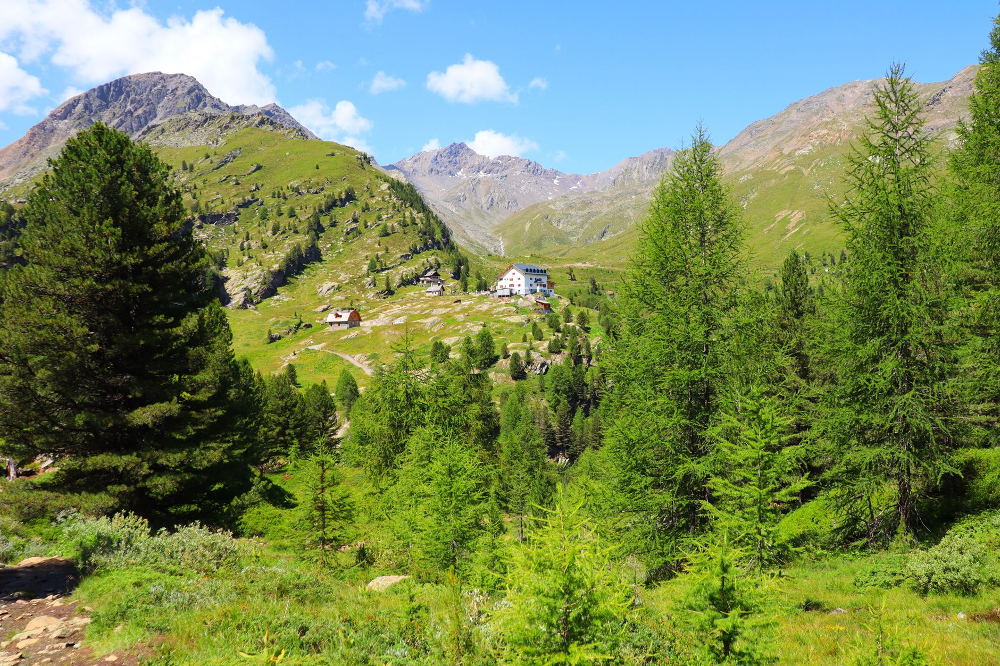

Photo: Stavro Ligori / Pexels
Stelvio Pass connects Bormio to Prato allo Stelvio through 2,758 metres of elevation and 48 numbered hairpins on the north side alone, more than any other paved pass in the Alps. Top Gear featured it in 2008 and called it one of the best driving roads on Earth, which is a large part of why it's on this list rather than a quieter alternative.
The road was originally built by the Austrian Empire in the 1820s to link Lombardy with Tyrol. It's short by kilometre count, but the hairpins make it slow going in either direction.
-

BormioThe southern base, a spa town at the foot of the climb. -

Stelvio Pass2,758 m, 48 numbered hairpins on the north side alone, more than any other pass in the Alps. -

Prato allo StelvioThe north end, in Italy's German-speaking South Tyrol.
Stop photos: Babak Habibi, eberhard grossgasteiger, Mario Vogt / Pexels
Prato allo Stelvio sits in Alto Adige, where German is the everyday language for most residents. Menus, signs, and place names shift noticeably once you're over the pass.
Good to know before you drive it
- The pass is closed by snow for roughly half the year, typically open from late May or June to October. Confirm current status before planning a trip outside high summer.
- The hairpins are numbered with stone markers, counting down as you descend the north side. It's a genuinely useful way to gauge progress, not just decoration.
- This is a narrow, high-traffic road in summer, shared with cyclists training for the same climb featured in the Giro d'Italia. Passing space is limited on the tightest bends.
- 46 km is a short distance, but the hairpins mean it's slower than the number suggests. Give it an unhurried half day.
Ready to book this drive? This route runs 46 km and about 0.9 hours behind the wheel, entirely inside Auto Europe's coverage area.
We book through Auto Europe. It compares Hertz, Sixt and the other major agencies in one search, with cross-border and one-way terms visible before checkout instead of buried in each company's own fine print.
Compare car rental prices →This is an affiliate link. Booking through it may earn Travel Gap a commission at no extra cost to you.
Read the full Europe road trip planning guide for what to check before you book anywhere on the continent.